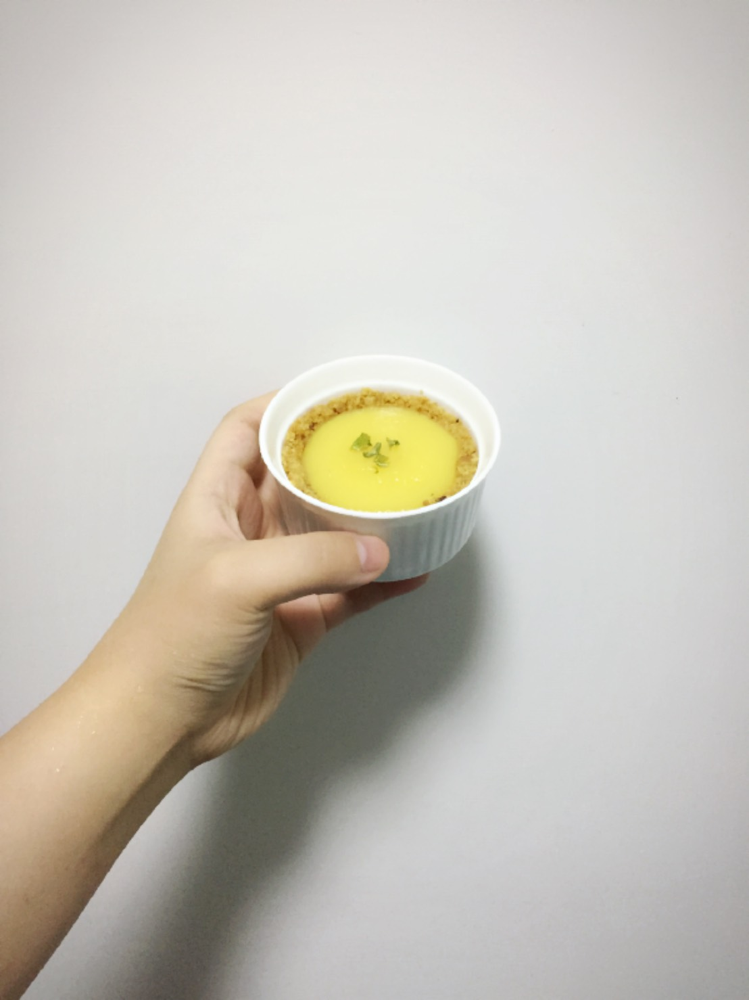

前陣子與同事兼烘焙愛好者做了一個競賽
『 千層與千層的大對決 』
無奈日期一直喬不攏
做好的千層就一直進到自己的肚子裡 ˊˋ
默默地吃了一堆糖，然後肚子又多了一圈這樣
最後覺得千層太耗時，只好改成拿手檸檬塔
變成 『 千層與 千層 檸檬派( 塔？ )的大對決 』

派皮
奶油 - 90/75/60 g
低筋麵粉 - 150 g
糖 - 40 g
牛奶 - 20 ml
蛋 - 1 pc
檸檬餡
檸檬汁 - 130 g
奶油 - 120 g
蛋 - 3 pc
以上食譜為比較容易成功的比例，網路上有很多做法就不多敘述了
ps. 運用電磁爐煮檸檬餡比用瓦斯爐小火煮還要快，而且不容易燒焦
從食譜看來，就可以深刻的了解檸檬塔是多麼高熱量的東西啊啊啊啊啊啊！！
自己做的檸檬塔可以去控制甜度跟奶油量，但做出來還是會覺得每一口都是罪惡
不過看到大家吃得這麼開心，熱量高這些話就到嘴邊吞下去好了
一個不可以只有我長肉的概念？！！
簡單的寫了一個投票頁面
See the Pen voteCake - Front End Engineer's Mid-Night Kitchen by Dana (@DanaChen) on CodePen.
運用 material ui 製作小東西真的很快速
背景是運用 unsplash 的 api 針對 food 做隨機選入
雖然最後沒有真的比賽破壞感情
但是天氣真的很好，讓大家心情都很好，是個適合野餐的日子
↑其他同事根本就是漁翁得利
comments powered by Disqus